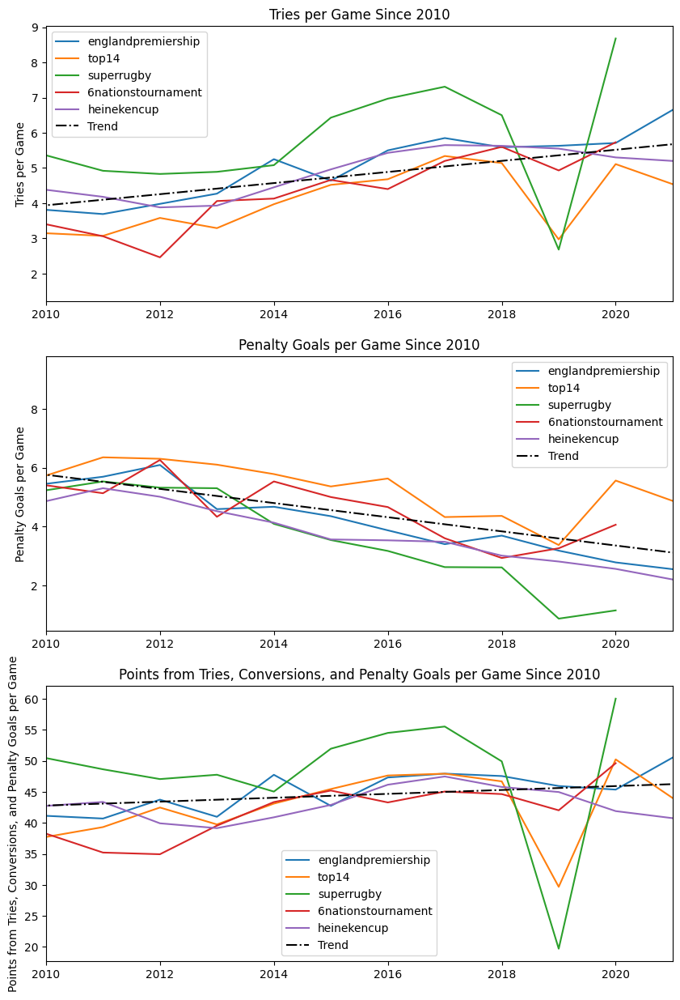
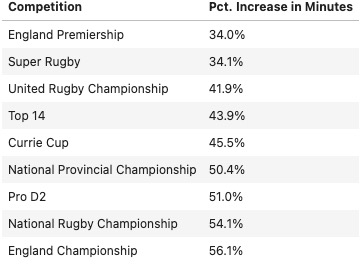

Rugby Competition Ranking

Rugby union is one of the most popular sports worldwide, yet more public data is needed for the game. Its Rugby is an excellent site that collects data from global rugby competitions and puts it into a readable format for fans everywhere. Here I scrape relevant data from this website and use it to analyze various aspects of the game. I then use this data to develop a support vector classification model to predict whether a player changing leagues will experience an increase in playing time. I use this model to rank the approximate strength of nine of the top international club competitions. This work only scratches the surface of what can be done with rugby data and what can be done with this dataset.
To analyze the data from the site, I first needed to assemble the data into a usable format for python. I used the Beautiful Soup package to scrape the webpage recursively and save individual player data into one table. I only scraped some of the data from the site as I was focused on rugby union statistics played for club sides. From this data, we can glean a few interesting insights. One clear thing is that in major club competitions, the number of tries increases while the number of penalty goals decreases. This could be due to rule changes or a change in penalty-taking strategy.
For the data to be modeled, it needs to be cleaned and reformatted, which I did by removing outlier data and reducing the number of target competitions to nine of the most prominent. I then create a support vector classification model to estimate whether players' minutes will increase or decrease on a change to a new league. This is a reasonable estimation of a player's performance. The model is accurate 73% of the time, outperforming the baseline by 40%. To gain analysis from the model, I oversampled a large amount of symmetrical data, which I ran through the model to see which leagues see people improve the most and which see them fail to improve. A player whose minutes increased on a move to a new team implies that the new league is weaker than the preceding one. The data gave a league ranking which is not unreasonable.
Because the model is not 100% accurate, minor differences here should not be considered conclusive. The ranking does, however, show three distinct tiers of competition. These results are consistent with a general opinion about the international leagues. The England Premiership and Super Rugby are, far and away, the strongest leagues. URC, Top 14, and the Currie Cup are in the next tier of competitions, with the average player decreasing their minutes but not nearly to the level of the top two. The NPC, Pro D2, NRC, and England Championship increasing in minutes is not surprising considering their relationship with the other leagues. Pro D2 and England Championship are of the second tier in their respective nations, and most of the top players in the NRC and NPC feed into Super Rugby.
There are still plenty more insights that can be gained from this data, so if you would like access to the data or code, please visit:
Kaggle GitHub